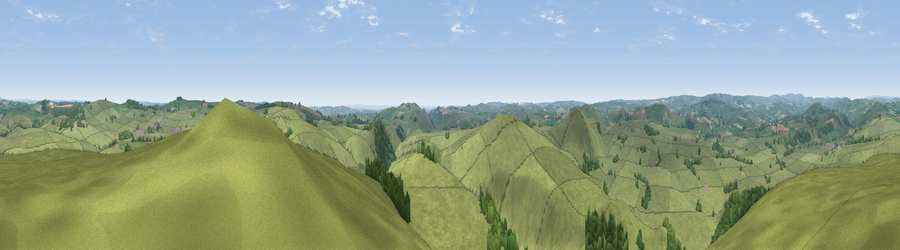

Viewpoint near Biggin
#8344 in England · top 6% of its area beats it · near BigginWhere it is
The exact computed spot (SK 13675 58325). Click the marker for map links.
The view, rendered

A 360° render of this exact spot computed from the terrain model, tree cover and land cover — summer colours, afternoon light, calibrated against photographs of famous viewpoints. Real trees, hedges and buildings will differ in detail.
The panorama
Grey silhouette: terrain skyline in each direction (720 bearings, Earth curvature and refraction included). Dashed green: skyline with trees (+15 m) and buildings (+8 m) as obstacles. Blue strip: how far the ground is visible on each bearing.
Where the view opens
Wedge length = distance to the farthest visible ground on that bearing (vegetation-aware). Rings at 10, 25 and 50 km.
What fills the view
89% grassland · 10% woodland ·
Angular shares of the visible panorama (visual magnitude), not map area. Landscape diversity 0.17 (0–1 Shannon).
Key numbers
More beautiful places nearby
The staircase of upgrades: each row has a higher view potential than everything closer. Driving times are estimates from straight-line distance, calibrated against real road routing — check an actual route before setting out.
| Place | Direction | Drive | Score |
|---|---|---|---|
| Tissington Hill | SSE · 6 km | ~13 min | 75.5 |
| Viewpoint near Mow Cop | W · 28 km | ~44 min | 78.9 |
| Viewpoint near Mow Cop | W · 28 km | ~44 min | 80.2 |
| Viewpoint near Harthill | W · 62 km | ~85 min | 80.5 |
| Viewpoint near Little Wenlock | SW · 71 km | ~94 min | 84.2 |
| The Wrekin | SW · 71 km | ~95 min | 85.0 |
| Viewpoint near Little Wenlock | SW · 72 km | ~95 min | 86.6 |
| North Hill | SSW · 118 km | ~142 min | 86.8 |
53.12193, -1.79711 · source: screening · position refined by local search. Computed location — check access rights before visiting.